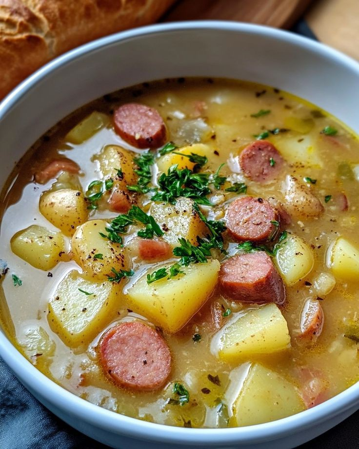

Peppersoup

Description
Peppersoup is a popular West African dish made with a flavorful broth, meat or fish, and a blend of spices. The soup is characterized by its spicy and aromatic flavor, which is achieved through the use of a variety of peppers, onions, garlic, and other spices. The ingredients are simmered together to create a rich and savory broth that is often served with fufu, rice, or plantains.
Peppersoup is a staple dish at many West African gatherings and celebrations. It's often served at special occasions such as weddings, birthdays, and holidays. The dish is also believed to have medicinal properties, making it a popular remedy for colds and flu. In many West African cultures, peppersoup is also seen as a symbol of hospitality and warmt
Ingredients
- 1 pound meat or fish (beef, chicken, fish, or goat meat)
- 2 medium onions, chopped
- 3 Scotch bonnet peppers, chopped
- 2 cloves garlic, minced
- 1 teaspoon ground ginger
- 1 teaspoon ground cumin
- 1/2 teaspoon cayenne pepper
- Salt and black pepper
- 4 cups beef or chicken broth
- 2 tablespoons vegetable oil
- 2 sprigs fresh thyme
Steps
- Prepare the ingredients:Chop the onions, Scotch bonnet peppers, and garlic. Grind the ginger, cumin, and cayenne pepper.
- Season the meat:Season the meat or fish with salt, black pepper, and any other desired spices.
- Heat oil and saut��: onionsHeat the vegetable oil in a large pot over medium heat. Add the chopped onions and saut�� until they're translucent.
- Add peppers and garlic:Add the chopped Scotch bonnet peppers and garlic to the pot. Saut�� for another minute.
- Add ginger and spices:Add the ground ginger, cumin, and cayenne pepper to the pot. Stir well.
- Add meat and broth:Add the seasoned meat or fish to the pot, along with the beef or chicken broth.
- Simmer the soup:Bring the mixture to a boil, then reduce the heat to low and simmer for 20-30 minutes, or until the meat is cooked through.
- Serve:Serve the peppersoup hot, garnished with chopped fresh herbs like parsley or thyme.
Home